Sistemas Operativos y Redes
0 - Estructura y Funcionamiento de Sistemas Operativos
Semestre 2022-1
Cristian Ruz - cruz@ing.puc.cl
Departamento de Ciencia de la Computación
Pontificia Universidad Católica de Chile
¿Para qué un Sistema Operativo?
Queremos ejecutar un código como esto
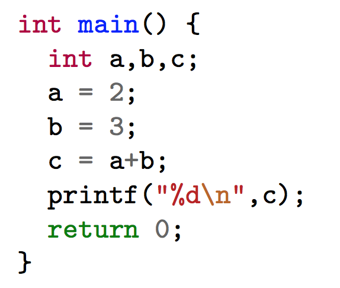más bien esto

Y para eso tenemos:

Source: https://www.soundonsound.com/techniques/installing-new-pc-motherboard
Hardware ejecuta ciclos de instrucciones
- Fetch
- Decode
- Execute
Hardware ejecuta programas (código) compilado
- ¿Cuál programa? ¿En qué orden?
- ¿Un programa a la vez?
- ¿En qué región de memoria?
- ¿Cómo utiliza los dispositivos de I/O?

El computador es una máquina programable (léase "reconfigurable") …
… pero electrónicamente compleja

Cuando ejecutamos un programa ...
- No nos preocupamos del hardware del computador
- No tenemos que esperar que otro programa termine para que el nuestro ejecute
- No especificamos qué región de la memoria va a utilizar
- No decidimos en que bloques del disco está almacenado
Porque afortunadamente existe el Sistema Operativo 😅
Afortunadamente también tenemos compiladores, pero en este curso alabaremos al sistema operativo
Estructura de un Sistema Operativo
¿Dónde vive el Sistema Operativo?
Sistema Operativo ES software
Sistema Operativo habla con el hardware
El Sistema Operativo es nuestro servidor más importante
- Nos protege de los detalles del hardware
- ¿Un core, dos core?, ¿4GB RAM?, ¿disco SSD?, … úselo no más, yo me encargo
- Nos permite compartir recursos con otros programas
- ¿Quiere navegar, tocar música, jugar WoW, compilar su tarea, todo al mismo tiempo? No se preocupe
- Nos ofrece servicios para hacer más cómodo el uso del hardware
- Escritura y lectura de disco, envío de mensajes por red, acceso a su pendrive USB, y todo eso … con una interfaz gráfica
Nos permite usar el computador 😃
¿Como no querer/estudiar a nuestro sistema operativo?
 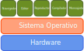
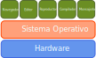¿Qué esperamos de un sistema operativo?
¡TODO lo bueno!
- Que sea confiable (reliable)
- "Que no se caiga/bloquee/cuelgue"
- Que mis programas ejecuten rápidamente
- "Para eso tengo mis 8 core y mis 128GB RAM"
- "Así puedo jugar, compilar, ver películas, etc. al mismo tiempo"
- Que no gaste todos los recursos (CPU, memoria, disco)
- "Este Windows/Linux/MacOSX cada vez consume más"
- Que mis datos estén seguros: que no me hackeen
- Que mis programas sigan funcionando después de una actualización
- Que me permita usar el computador (que no me moleste)
El sistema operativo es un software complejo
Debe cumplir varios roles
- Debe ser un administrador de recursos
- ¿A quién le toca ejecutar? ¿Qué recursos necesita?
- ¿Qué CPU uso? ¿En qué disco escribo?
- Sistema Operativo multiplexa recursos escasos entre múltiples usuarios
- Debe ser capaz de proteger los recursos
- "No tiene permisos para leer/escribir esos archivos"
- "No intente leer la memoria de otro proceso"
- "¿Quién es este usuario?"
- Debe ser capaz de abstraernos de los detalles del hardware
- Permite que el sistema se vea como una máquina única
- ¿AMD, Intel, Samsung, Seagate?, no importa, aquí tiene una máquina con: CPU, memoria y disco.
- Provee una interfaz para poder usar apropiadamente el hardware
- Sistema Operativo virtualiza recursos para hacernos creer que hay más
El sistema operativo es como el gobierno … no sirve para nada por sí solo …
… pero es fundamental para que podamos usar programas
El sistema operativo es un software complejo
¿Qué hay dentro de un sistema operativo?
- Administración de procesos
- Manejo de memoria
- Sistemas de archivos
- Protección y seguridad
- Control de I/O
- Manejo de errores
- Comunicación inter-procesos
- Contabilidad / logging
- Controladores (drivers)
- etc …
Programas utilizan servicios del sistema operativo. ¿Cómo los invocan?
El sistema operativo es un software complejo
¿Cómo se invocan los servicios del sistema operativo?
Sistema operativo provee una interfaz de llamadas al sistema (syscalls)
- Cada vez que un programa desea solicitar algo al sistema operativo, debe invocar una syscall
- "Por favor, sistema operativo, haz esto por mi"
- Cada sistema operativo puede proveer un conjunto distinto de syscalls
- Sistemas operativos proveen bibliotecas (libraries) en algún lenguaje de programación (C) para invocar syscalls.

Sin embargo, cuando interactuamos con el computador no escribimos syscalls
El sistema operativo es un software complejo
¿Cómo interactuamos con el sistema operativo?
Sistema operativo provee interfaces de usuario (user interface) que enmascara syscalls
- Ofrecen un entorno más "amigable" para usar el computador
- ¿Son parte del sistema operativo?
Distintas maneras de interactuar con el sistema operativo
- Interfaces gráficas: GUI (Graphical User Interface)
- Intérprete de comandos (Command Line)
- Batch (lotes): secuencias de comandos no-interactivas
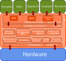
El sistema operativo es un software complejo
Interfaces gráficas: GUI
GUIs ofrecen un entorno basado en abstracciones (ventanas, punteros) para interactuar con el sistema operativo
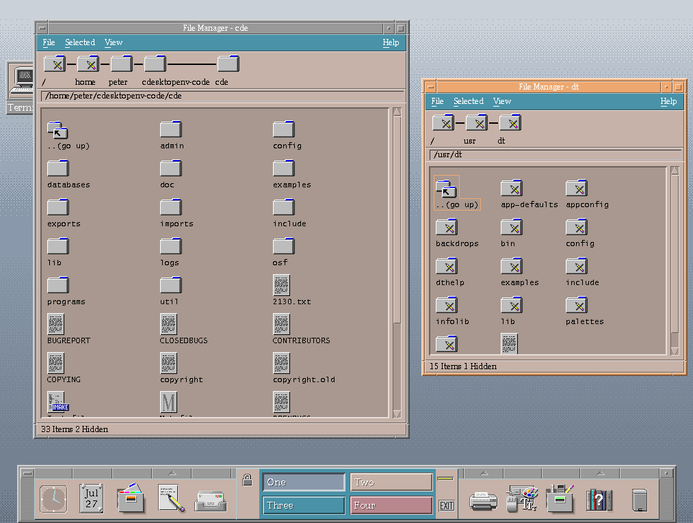

 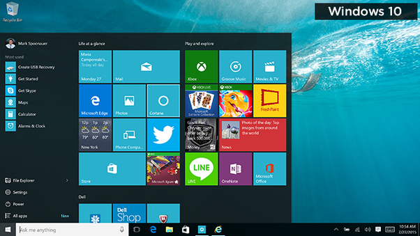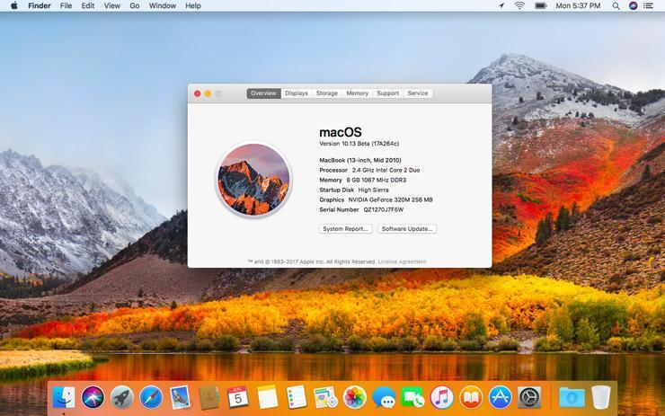
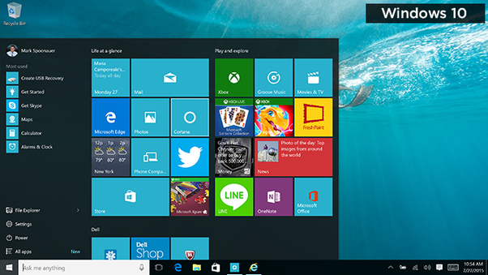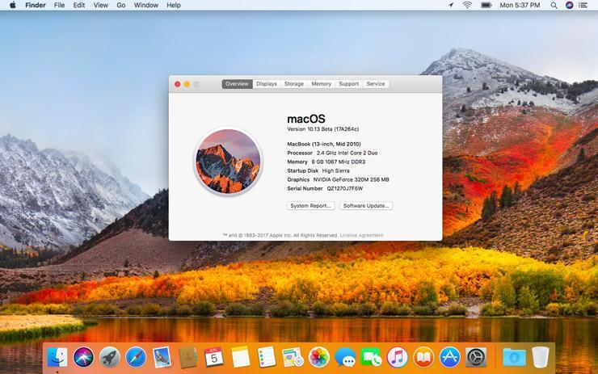El sistema operativo es un software complejo
Intérprete de comandos / linea de comandos / command line
menos preciso: shell, terminal, consola, xterm, prompt
- UNIX/Linux/MacOSX:
sh,csh,tcsh,ksh,bash,zsh - MS-DOS/Windows:
COMMAND.COM,cmd.exe, PowerShell
 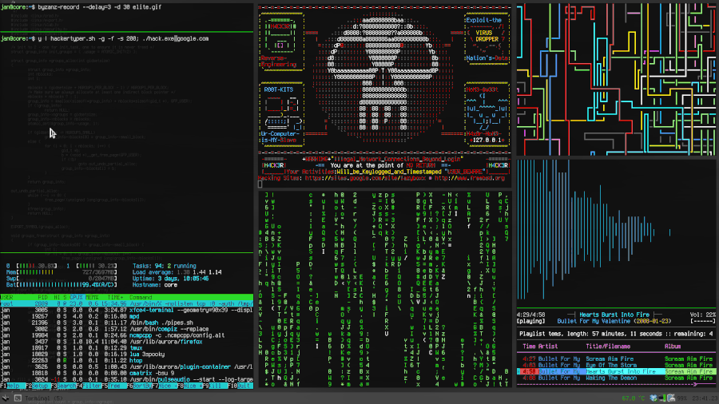
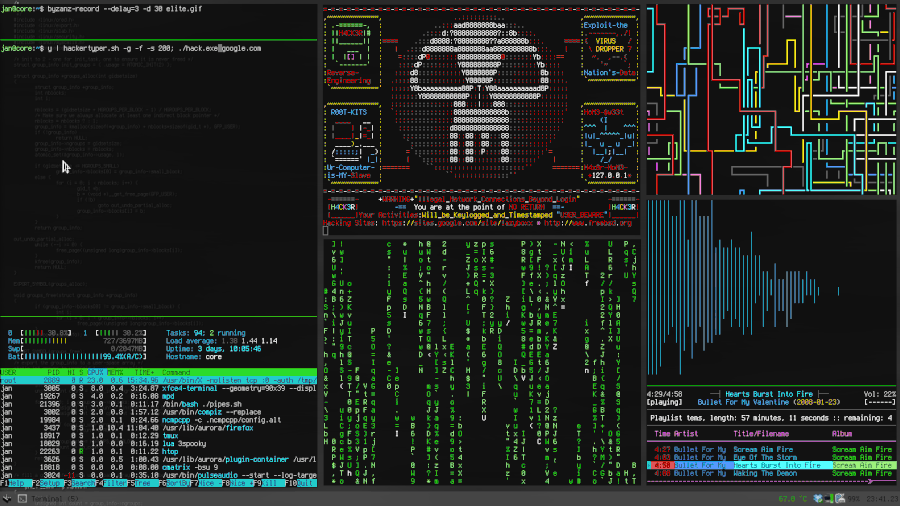
 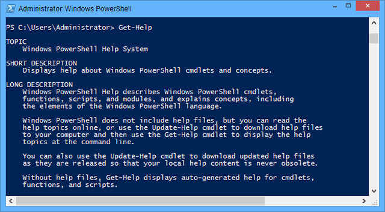
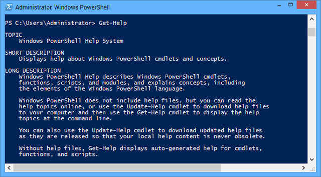El sistema operativo es un software complejo
Intérprete de comandos / linea de comandos / command line
menos preciso: shell, terminal, consola, xterm, prompt
- Solicitar comando/instrucción al usuario y ejecutarlo
prompt comando [parametros]
Command Prompt (símbolo del sistema)
- Indica que el sistema está listo para recibir un comando
- Usualmente un texto terminado en
$, %, #, :, >
cruz$ ls
jabaier@grima$ cp clase-01.tex backup/
jnavon@www[15:35]:> rm tareaSistOp.*
dietr1ch@nb# ~/SO/Tareas
ls -d */ | parallel --tag 'cd {} && make'El sistema operativo es un software complejo
El kernel (núcleo, supervisor)
El código fundamental del sistema operativo.
- Es software
- Suele ser lo más pequeño posible (o no)
Tiene completo control sobre el sistema (hardware)
- Es el único programa que ejecuta en un modo privilegiado
- También conocido como modo monitor, modo kernel, modo sistema
- Todo lo que no es parte del kernel, ejecuta en modo usuario
Sistema operativo incluye herramientas (programas) que facilitan la labor del kernel, pero que no son fundamentales
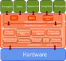
Sistema Operativo = Kernel + Programas del Sistema
El sistema operativo es un software complejo
¿De qué tamaño es todo esto?
- MacOSX (Tiger, 2005): \( \sim 86 \times 10^6 \) líneas de código
- Windows 10: \( \sim 50\times 10^6 \) líneas de código
- Linux 4.14: \( \sim 20\times 10^6 \) líneas de código
- Version 1.0.0 (Marzo 1994) tenía 176250 líneas
- Kernel Linux está en archivo
vmlinuz(Virtual Memory LINUx gZip) - ChromeOS: \( 17 \times 10^6 \) líneas de código
- MINIX 3: \( \sim 12000 \) líneas de código
Más comparaciones y más aún
El sistema operativo es un software complejo
A veces fallan ...
Errores y vulnerabilidades pueden deberse a una combinación entre el hardware y el sistema operativo
- O en las herramientas del kernel

Sistema Operativo
La herramienta de software que nos permite usar el computador
Roles
- Administrador de recursos
- Protector
- Servidor
Tareas
- Administración de procesos
- Manejo de memoria
- Sistemas de archivos
- Protección y seguridad
- Control de dispositivos I/O
Arquitecturas
- Monolítico
- Microkernel
- Híbrido
Sistema Operativo = Kernel + Herramientas

Arquitecturas de kernel
¿Cómo se organiza el kernel?
Muchos componentes a integrar
- Primeros sistemas operativos empezaron pequeños y luego crecieron
- No tenían mucha estructura
MS-DOS (1981)
- Sistema monolítico (un gran kernel estático)
- Programas de usuario podían acceder directamente al hardware
- Hardware (Intel 8088) no proveía modos de protección
Kernel monolítico
Todo dentro en un único programa
- Servicios para el sistema y para el usuario en el mismo espacio
- Todos los servicios se ejecutan en modo kernel
- La falla de un servicio compromete al kernel
- Kernel complejo y de mayor tamaño
- Ejecución más rápida
Ejemplos
- Unix (BSD, System V)
- Linux
- MS-DOS, Windows 95/98/Me
Kernel monolítico con módulos
Todo en un único programa extensible
- Componentes pueden ser incluidos al momento de compilar, o bien durante la ejecución como módulos
- Módulos extienden al kernel
- Módulos se ejecutan en el espacio del kernel
- Ayuda a controlar el tamaño del kernel (footprint)
Microkernel
Mantener el kernel del menor tamaño posible
- Solo servicios básicos en el kernel
- Funcionalidades (servers) se ejecutan en user space
- Errores en los servicios no afectan al kernel
- Kernel más sencillo, pequeño y fácil de portar
- Procesos se comunican (IPC) mediante paso de mensajes
- Ejecución con overhead por comunicación
Ejemplos
- Mach, implementación de UNIX con microkernel (CMU)
- GNU/Hurd, inspirado en Mach
- L4
- MINIX 3, desarrollado por Andrew S. Tanenbaum
Se han propuesto exokernels y nanokernels
Kernel híbrido
"Lo mejor" de ambos mundos
- Construido como monolítico con módulos
- Con funcionalidades que ejecutan en user space
- O marketing según Linus Torvalds
Ejemplos
- Windows NT
- ReactOS
- XNU, kernel de Darwin (Mac OS X, iOS)
Monolítico vs Microkernel
Must read: Tanenbaum-Torvals debate: Linux is obsolete, 1992
Monolítico
- Kernel de mayor tamaño y complejo
- Todos los servicios en kernel space
- Falla en un servicio afecta a todo el kernel
- Ejecución más rápida
- Difícil de extender, pero puede usar módulos
Microkernel
- Kernel pequeño y simple
- Servicios mínimos en kernel space. Mayoría en user space
- Falla en un servicio queda aislada
- Ejecución con overhead por comunicación
- Fácil de extender
¿Cómo funciona el Sistema Operativo?
El sistema operativo efectúa muchas tareas, pero … ¿cuando le toca el usuario?
Y si ahora le toca al usuario, ¿entonces el sistema operativo ya no ejecuta más?
Recordemos una de las tareas del sistema operativo:
- Permitir que el usuario pueda utilizar el computador
- Sistema operativo debe mantener el computador disponible para el usuario
El proceso de arranque
Al iniciar el computador se ejecuta código de la tarjeta madre
Este código tiene dos misiones fundamentales
- Inicializar/identificar el hardware
- Ubicar y arrancar mediante un bootloader el kernel en modo privilegiado
El kernel es el único software que funciona en modo privilegiado
Modos de protección
El hardware posee dos modos de protección
- Kernel mode: acceso completo al hardware
- a.k.a. Privileged | Supervised | Monitor | System mode
- User mode: acceso a un set restringido de instrucciones
- Hardware genera una interrupción (protection fault), o bien
- Ignora la instrucción
El kernel es el único software que funciona en modo privilegiado
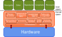
Modos de protección
Instrucciones privilegiadas (ring 0)
- Modificar vector de interrupciones (
CLI,IRET) - Acceder a dispositivos de I/O
- Modificar timer del computador
- Detener el computador (halt,
HLT) - Cambiar el modo de protección (user a kernel, o viceversa)
- Modificar tablas de acceso a memoria (pagetable,
INVLPG) - Almacenar estado de la máquina (
SMSW)
Estas instrucciones son un ejemplo de las instrucciones privilegiadas del set de instrucciones Intel 64.
Hardware moderno posee 4 o más modos de protección
- Se les llama rings (anillos) de protección
- Permite implementar virtualización
- Intel 64 posee 4 niveles (sección 5.5) y una lista de instrucciones privilegiadas (sección 5.9)
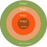
Interrupciones
Los Sistemas Operativos son manejados por interrupciones / traps.
Mientras nadie lo llame, el sistema operativo no hace nada.
- Programa de usuario genera un trap: interrupción generada por software
- Control pasa al sistema operativo: kernel space
- Sistema operativo ejecuta servicio solicitado por el usuario
- Una vez terminado el servicio, sistema operativo regresa el control al programa de usuario

Syscalls: llamadas al sistema
Interfaz para solicitar servicios al sistema operativo
- Manera precisa de llamar al sistema operativo es altamente dependiente del hardware
- Sistemas proveen bibliotecas que implementan syscalls
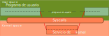
¿Qué hace el sistema operativo ante el siguiente comando?
copy source.txt dest.txt- Abrir
source.txt(stat,open) - ¿existe?, ¿tiene permiso de lectura?, …
- Abrir
dest.txt(stat,open) - ¿existe?, ¿se reemplaza?, ¿se puede escribir?, …
- Leer
source.txthacia alguna región de memoria (mmap,read) - Escribir desde la memoria hacia
dest.txt(write) - Liberar la memoria y guardar los archivos (
munmap,close)
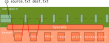
Todas estas acciones requieren llamadas al sistema
Pruebe con:
strace cp source.txt dest.txtDefinir una interfaz estándar ayuda a la portabilidad
- POSIX, interfaz definida en IEEE1003.1-2017
- SCI, System Call Interface. Interfaz de syscalls de Linux
- Linux kernel API: interfaz SCI + implementación en
glibc - Windows NT Native API, interfaz para Windows NT. Implementada en
ntdll.dll - Windows API (Win32), en
kernel32.dll,advapi32.dll,user32.dll
¿Cómo se ejecuta una syscall?
Procedimiento es dependiente del hardware
Participan:
- Proceso ejecutable de usuario
- Biblioteca (estática o dinámica) que invoca la syscall
- Vector de interrupciones del hardware, configurado por el sistema operativo
- Código de syscalls del sistema operativo, que utilizan el hardware
¿Qué hace
read? RTFM¿Cómo se ejecuta una syscall?
Ejemplo basado en Linux e Intel64
- Proceso de usuario invoca rutina de biblioteca
read - Implementación de
readprepara la invocación configurando el stack y el registroeax - Generación de interrupción:
int 0x80. Intel64 usa (fast)syscall - Hardware pasa de modo user a kernel y actúa de acuerdo al vector de interrupciones
- Vector de interrupciones ejecuta instrucción
system_calldel sistema operativo - Sistema operativo obtiene número de syscall desde
eax, y configura stack para poder retornar al usuario - Sistema operativo ejecuta el código de
sys_write - Ejecución de
sys_writerecupera argumentos, ejecuta acción, y deja valor de retorno eneax - Sistema operativo cambio modo a user, y
sys_writeretorna al código de la biblioteca (sysexit) - Código de biblioteca recupera el valor de retorno de la syscall y lo entrega al proceso de usuario
Algunas syscalls de POSIX y su equivalencia en Win32
- Es natural que no todas las syscall tenga una equivalencia.
- Cada sistema provee su propio conjunto de instrucciones para interactuar con el usuario
Arquitecturas y llamadas al sistema
Sistemas Operativos proveen niveles de abstracción
Protección entre espacios de user y kernel
- Cuánto queda en kernel space y en user space determina si el kernel es monolítico o microkernel
Usuario solicita servicios a través de syscalls
- Todas las funciones definidas por POSIX
- En Linux, la función
syscallpermite invocar cualquier syscall ...man syscall - Todas las instrucciones de Intel64
- Tutorial: Como crear su propia syscall
Sistema operativo es una pieza de software compleja ... y fascinante